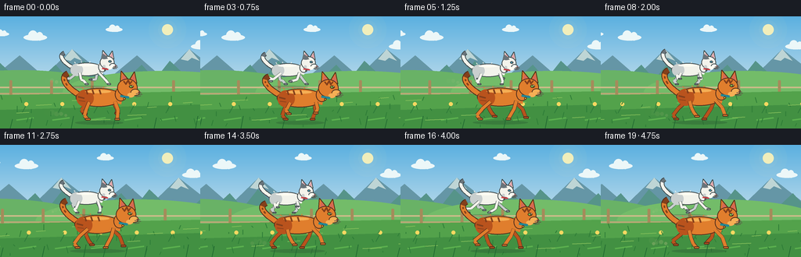
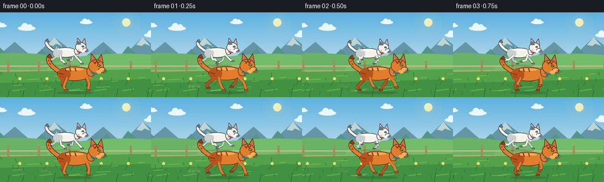

CODING AGENTS AS PIXEL WORLD MODELS
traex/GPT-5.6-Sol · instance_preservation_0004
点击播放 · 原生 RGB 像素
逐轮保存的候选
回放视频、检查图与代码变化。
每份候选均可单独播放。实际图片检查记录在下方工具轨迹中。
候选 01播放与检查图
点击播放 · 原生 RGB 像素


展开代码变化
--- 上一保存版本
+++ 本次保存版本
@@ -0,0 +1,304 @@
+from pathlib import Path
+import json, math, random
+import numpy as np
+from PIL import Image, ImageDraw, ImageFilter
+import artifact_io
+
+CASE_DIR = Path(__file__).resolve().parent
+SPEC = json.loads((CASE_DIR / "task_spec.json").read_text())
+W, H = int(SPEC["width"]), int(SPEC["height"])
+N, FPS = int(SPEC["frames"]), float(SPEC["fps"])
+S = 4 # supersampling for smooth, clean vector-like edges
+random.seed(18)
+
+
+def sc(v):
+ if isinstance(v, (tuple, list)):
+ return tuple(int(round(x * S)) for x in v)
+ return int(round(v * S))
+
+
+def ellipse(d, box, fill, outline=None, width=1):
+ d.ellipse(sc(box), fill=fill, outline=outline, width=sc(width) if outline else 1)
+
+
+def polygon(d, pts, fill, outline=None, width=1):
+ d.polygon([sc(p) for p in pts], fill=fill)
+ if outline:
+ d.line([sc(p) for p in pts + [pts[0]]], fill=outline, width=sc(width), joint="curve")
+
+
+def line(d, pts, fill, width=1, joint="curve"):
+ d.line([sc(p) for p in pts], fill=fill, width=sc(width), joint=joint)
+
+
+def rounded(d, box, radius, fill, outline=None, width=1):
+ d.rounded_rectangle(sc(box), radius=sc(radius), fill=fill, outline=outline,
+ width=sc(width) if outline else 1)
+
+
+def bezier_points(p0, p1, p2, p3, count=18):
+ out = []
+ for t in np.linspace(0, 1, count):
+ u = 1-t
+ out.append((u**3*p0[0]+3*u*u*t*p1[0]+3*u*t*t*p2[0]+t**3*p3[0],
+ u**3*p0[1]+3*u*u*t*p1[1]+3*u*t*t*p2[1]+t**3*p3[1]))
+ return out
+
+
+def gradient_background(frame):
+ im = Image.new("RGB", (W*S, H*S))
+ pix = np.asarray(im).copy()
+ # warm blue morning sky, fading toward the horizon
+ for y in range(H*S):
+ yy = y / S
+ if yy < 96:
+ q = yy / 96
+ c = (int(91 + 105*q), int(176 + 47*q), int(224 + 12*q))
+ else:
+ q = min(1, (yy-96)/48)
+ c = (int(112 + 54*q), int(181 + 29*q), int(116 - 35*q))
+ pix[y, :, :] = c
+ return Image.fromarray(pix)
+
+
+def draw_scenery(im, f):
+ d = ImageDraw.Draw(im)
+ drift = f * 5.7
+ # Sun glow on separate translucent layer
+ glow = Image.new("RGBA", im.size, (0,0,0,0)); gd = ImageDraw.Draw(glow)
+ for r, a in [(24,8),(18,12),(12,22)]:
+ ellipse(gd, (214-r, 17-r, 214+r, 17+r), (255,238,164,a))
+ ellipse(gd, (207,10,221,24), (255,244,183,230))
+ im.paste(glow, (0,0), glow)
+ d = ImageDraw.Draw(im)
+ # Layered drifting clouds
+ for base_x, y, scale in [(30,23,1.0),(135,14,.72),(244,35,.9),(352,20,.65)]:
+ x = ((base_x - drift*.18 + 40) % 360) - 40
+ col = (236,247,248)
+ ellipse(d,(x,y,x+30*scale,y+8*scale),col)
+ ellipse(d,(x+6*scale,y-5*scale,x+18*scale,y+8*scale),col)
+ ellipse(d,(x+16*scale,y-3*scale,x+25*scale,y+8*scale),col)
+ # distant mountains, two parallax layers
+ off1 = (drift*.22) % 150
+ pts=[(-160-off1,79),(-125-off1,50),(-94-off1,77),(-58-off1,42),(-12-off1,78)]
+ for k in range(4):
+ pp=[(x+150*k,y) for x,y in pts]
+ polygon(d,pp,(101,150,166))
+ # tiny pale caps
+ if k < 4:
+ x=-58-off1+150*k
+ polygon(d,[(x-11,55),(x,42),(x+13,57),(x+3,53),(x-2,57)],(190,213,213))
+ off2=(drift*.42)%110
+ for k in range(5):
+ x=-70-off2+k*110
+ polygon(d,[(x,91),(x+31,62),(x+48,81),(x+67,57),(x+103,91)],(86,148,137))
+ # distant rolling meadow
+ off=(drift*.55)%180
+ d.pieslice(sc((-100-off,69,150-off,128)),180,360,fill=(105,178,102))
+ d.pieslice(sc((80-off,70,340-off,125)),180,360,fill=(115,188,105))
+ # fence posts and rails behind runners
+ fence_shift=(drift*1.0)%52
+ line(d,[(-10,91),(266,91)],(204,187,137),2)
+ line(d,[(-10,99),(266,99)],(188,168,117),2)
+ for x in np.arange(-40-fence_shift,300,52):
+ rounded(d,(x,82,x+3.5,104),1,(165,139,91))
+ # foreground grass bands
+ polygon(d,[(-1,101),(257,96),(257,145),(-1,145)],(83,162,75))
+ polygon(d,[(-1,120),(257,113),(257,145),(-1,145)],(66,144,66))
+ # fast parallax streaks and flowers
+ fg=(drift*2.15)%46
+ for k in range(8):
+ x=-25-fg+k*46
+ line(d,[(x,133),(x+22,130)],(91,176,78),2)
+ line(d,[(x+7,124),(x+13,113)],(47,123,57),1)
+ ellipse(d,(x+10,110,x+15,115),(248,216,97))
+ # fine blades
+ for k in range(32):
+ x=(k*37 - drift*2.6)%290-15
+ y=106+(k*17)%37
+ h=2+(k*13)%7
+ line(d,[(x,y),(x+((k%3)-1)*2,y-h)],(46,125,55),1)
+ # horizontal highlights emphasize speed
+ for k in range(9):
+ x=(k*71-drift*3.0)%330-50
+ y=105+(k*19)%35
+ line(d,[(x,y),(x+12+(k%4)*4,y-1)],(135,193,91),1)
+
+
+def draw_dust(im, x, ground, f, phase, scale=1.0):
+ # Repeatable, semi-transparent dust motes trailing behind each runner
+ layer=Image.new("RGBA",im.size,(0,0,0,0)); d=ImageDraw.Draw(layer)
+ burst=max(0, math.sin(phase+0.6))
+ if burst > .25:
+ for i in range(5):
+ age=((f*3+i*1.9)%8)/8
+ xx=x-7-i*4-age*8
+ yy=ground-2-i%2*1-age*4
+ rr=(1.8+age*2.4)*scale
+ ellipse(d,(xx-rr,yy-rr,xx+rr,yy+rr),(229,211,156,int((1-age)*70*burst)))
+ im.paste(layer,(0,0),layer)
+
+
+def leg_geometry(ax, ay, ground, phase, rear=False):
+ """Return two-bone running pose. Positive sine sweeps paw forward."""
+ stride=math.sin(phase)
+ recovery=max(0.0, -math.cos(phase))
+ stance=max(0.0, math.cos(phase))
+ if rear:
+ pawx=ax + 13*stride - 2
+ pawy=ground - 1 - 7*recovery
+ knee=(ax - 4 + 7*stride, ay + 8 + 2*stance)
+ hock=(pawx-4, pawy-5)
+ return [((ax,ay),knee),(knee,hock),(hock,(pawx,pawy))], (pawx,pawy)
+ pawx=ax + 14*stride + 1
+ pawy=ground - 1 - 8*recovery
+ knee=(ax + 3 + 7*stride, ay+9+2*stance)
+ return [((ax,ay),knee),(knee,(pawx,pawy))],(pawx,pawy)
+
+
+def draw_leg(d, geom, paw, color, edge, scale=1.0, behind=False):
+ w=max(2,round(4.0*scale))
+ # dark under-stroke gives definition at tiny resolution
+ for a,b in geom:
+ line(d,[a,b],edge,w+1)
+ for a,b in geom:
+ line(d,[a,b],color,w)
+ px,py=paw
+ rounded(d,(px-3.2*scale,py-1.5*scale,px+3.8*scale,py+1.5*scale),1.2*scale,color,edge,1)
+
+
+def draw_cat(im, cx, cy, scale, phase, palette, ground, kind="orange"):
+ d=ImageDraw.Draw(im)
+ edge=palette["edge"]; fur=palette["fur"]; shade=palette["shade"]
+ dark=palette["dark"]; light=palette["light"]
+ # scale-local coordinates
+ def P(x,y): return (cx+x*scale,cy+y*scale)
+ bob=-abs(math.sin(phase))*1.3*scale
+ cy += bob
+ ground += bob*.12
+ # shadow below runner
+ shadow=Image.new("RGBA",im.size,(0,0,0,0)); sd=ImageDraw.Draw(shadow)
+ stretch=1+0.16*abs(math.sin(phase))
+ ellipse(sd,(cx-31*scale*stretch,ground+1,cx+31*scale*stretch,ground+6*scale),(34,73,45,72))
+ im.paste(shadow,(0,0),shadow); d=ImageDraw.Draw(im)
+ # Tail, behind body: lively but firmly attached and always same markings
+ sway=math.sin(phase*.55)*3*scale
+ p0=P(-27,-3); p1=P(-42,-12); p2=P(-51,-25+sway/scale); p3=P(-40,-30+sway/scale)
+ tailpts=bezier_points(p0,p1,p2,p3,22)
+ line(d,tailpts,edge,max(3,round(8*scale)))
+ line(d,tailpts,fur,max(2,round(6*scale)))
+ # tail tip/stripes
+ line(d,tailpts[-6:],dark,max(2,round(5.8*scale)))
+ if kind=="orange":
+ for j in (8,12,16):
+ q=tailpts[j]
+ q2=tailpts[min(j+2,len(tailpts)-1)]
+ line(d,[q,q2],dark,max(1,round(2.2*scale)))
+ # legs on far side first
+ rear_anchor=P(-17,7); front_anchor=P(18,7)
+ rear_far,_rp=leg_geometry(*rear_anchor,ground,phase+math.pi,rear=True)
+ front_far,_fp=leg_geometry(*front_anchor,ground,phase+math.pi*.92,rear=False)
+ draw_leg(d,rear_far,_rp,shade,edge,scale,True)
+ draw_leg(d,front_far,_fp,shade,edge,scale,True)
+ # body silhouette, haunch and chest
+ ellipse(d,(cx-30*scale,cy-11*scale,cx+29*scale,cy+13*scale),fur,edge,max(1,round(1.2*scale)))
+ ellipse(d,(cx-29*scale,cy-9*scale,cx-7*scale,cy+13*scale),shade)
+ # soft body highlight
+ ellipse(d,(cx-18*scale,cy-8.5*scale,cx+15*scale,cy-4.5*scale),light)
+ # chest tuft / neck
+ polygon(d,[P(22,-8),P(31,-5),P(28,10),P(21,8),P(18,2)],fur)
+ # near legs after torso
+ rear_near,rpaw=leg_geometry(*P(-13,7),ground,phase,rear=True)
+ front_near,fpaw=leg_geometry(*P(20,6),ground,phase+0.12,rear=False)
+ draw_leg(d,rear_near,rpaw,fur,edge,scale)
+ draw_leg(d,front_near,fpaw,fur,edge,scale)
+ # neck and head, face aimed right
+ neckx,necky=P(27,-4)
+ ellipse(d,(neckx-7*scale,necky-8*scale,neckx+8*scale,necky+10*scale),fur,edge,max(1,round(scale)))
+ hx,hy=P(35,-11)
+ # ears behind head
+ polygon(d,[P(27,-19),P(28,-33),P(37,-22)],fur,edge,1)
+ polygon(d,[P(39,-22),P(45,-32),P(48,-17)],fur,edge,1)
+ polygon(d,[P(29,-21),P(30,-29),P(35,-23)],palette["ear"])
+ polygon(d,[P(41,-23),P(45,-29),P(46,-19)],palette["ear"])
+ # head and muzzle
+ ellipse(d,(hx-12*scale,hy-12*scale,hx+14*scale,hy+11*scale),fur,edge,max(1,round(1.1*scale)))
+ ellipse(d,(hx+5*scale,hy+1*scale,hx+17*scale,hy+10*scale),light,edge,max(1,round(.7*scale)))
+ # chin
+ ellipse(d,(hx+1*scale,hy+6*scale,hx+10*scale,hy+12*scale),light)
+ # consistent collar
+ line(d,[P(27,-1),P(38,1)],palette["collar"],max(2,round(2.7*scale)))
+ ellipse(d,(P(32,0)[0]-1.6*scale,P(32,0)[1]+1*scale,P(32,0)[0]+1.6*scale,P(32,0)[1]+4.2*scale),palette["tag"],edge,max(1,round(.6*scale)))
+ # eye, pupil and catchlight
+ ex,ey=P(41,-13)
+ ellipse(d,(ex-3*scale,ey-2.1*scale,ex+3*scale,ey+2.1*scale),palette["eye"],edge,max(1,round(.6*scale)))
+ ellipse(d,(ex+.6*scale,ey-1.8*scale,ex+1.4*scale,ey+1.9*scale),edge)
+ ellipse(d,(ex+1.2*scale,ey-1.3*scale,ex+2.0*scale,ey-.5*scale),(255,255,245))
+ # nose, smile, whiskers
+ nx,ny=P(51,-5)
+ polygon(d,[(nx-1.7*scale,ny-1.2*scale),(nx+1.7*scale,ny-1.2*scale),(nx,ny+1.2*scale)],palette["nose"])
+ line(d,[(nx,ny+1*scale),(nx-1*scale,ny+3*scale),(nx-3*scale,ny+3*scale)],edge,max(1,round(.6*scale)))
+ for dy,sl in [(-1,7),(1,8),(3,6)]:
+ line(d,[P(47,-3+dy),P(47+sl,-4+dy)],(92,82,73),max(1,round(.45*scale)))
+ # characteristic coat details remain locked to body/head
+ if kind=="orange":
+ # tabby forehead M and flank stripes
+ line(d,[P(31,-20),P(34,-16),P(37,-21),P(39,-16),P(42,-20)],dark,max(1,round(1.6*scale)))
+ for x in (-17,-9,0):
+ line(d,[P(x,-9),P(x+2,-3)],dark,max(1,round(1.8*scale)))
+ line(d,[P(-27,0),P(-19,2)],dark,max(1,round(1.6*scale)))
+ line(d,[P(-26,5),P(-18,6)],dark,max(1,round(1.4*scale)))
+ else:
+ # gray ear crown patch and small cheek spot
+ polygon(d,[P(25,-18),P(27,-28),P(35,-22),P(37,-18),P(31,-17)],dark)
+ ellipse(d,(P(28,-7)[0],P(28,-7)[1],P(33,-2)[0],P(33,-2)[1]),shade)
+ # a few fur edge flicks for life
+ for x,y,dx,dy in [(-20,-10,-2,-2),(-9,-11,-1,-2),(5,-11,1,-2),(20,-8,2,-1)]:
+ line(d,[P(x,y),P(x+dx,y+dy)],fur,max(1,round(.75*scale)))
+
+
+def make_frame(f):
+ im=gradient_background(f)
+ draw_scenery(im,f)
+ # The small white cat runs on the farther lane, fully visible above the orange one.
+ theta_w=2*math.pi*(f/6.0)+1.0
+ draw_dust(im,91,88,f,theta_w,.72)
+ white={
+ "fur":(243,243,235),"shade":(201,207,206),"dark":(105,116,122),
+ "light":(255,253,242),"edge":(62,73,75),"ear":(226,162,168),
+ "eye":(64,177,211),"nose":(163,102,111),"collar":(207,66,71),"tag":(247,199,59)
+ }
+ wx=111+1.6*math.sin(f*.32)
+ wy=68+0.7*math.sin(f*.46)
+ draw_cat(im,wx,wy,.72,theta_w,white,88,kind="white")
+ # Orange tabby in the nearer lane; larger, but never covers the white cat's face/body.
+ theta_o=2*math.pi*(f/6.0)
+ draw_dust(im,91,129,f,theta_o,1.0)
+ orange={
+ "fur":(224,126,45),"shade":(185,83,29),"dark":(131,63,27),
+ "light":(245,175,85),"edge":(80,45,28),"ear":(214,103,86),
+ "eye":(122,190,75),"nose":(116,58,52),"collar":(35,134,148),"tag":(250,206,64)
+ }
+ ox=126+1.8*math.sin(f*.30+.5)
+ oy=103+0.8*math.sin(f*.41)
+ draw_cat(im,ox,oy,1.0,theta_o,orange,133,kind="orange")
+ # sparse foreground blades overlap paws for depth
+ d=ImageDraw.Draw(im)
+ for k in range(7):
+ x=(k*53-f*13)%290-15
+ line(d,[(x,144),(x+3,132-(k%3)*2)],(35,107,50),1)
+ # downsample to requested RGB dimensions
+ return np.asarray(im.resize((W,H),Image.Resampling.LANCZOS).convert("RGB"),dtype=np.uint8)
+
+
+def main():
+ frames=np.stack([make_frame(i) for i in range(N)],axis=0)
+ artifact_io.save(frames,CASE_DIR)
+ # Lightweight preview for convenient local inspection; canonical submission is pixels.npz/index.html.
+ imgs=[Image.fromarray(x) for x in frames]
+ imgs[0].save(CASE_DIR/"preview.gif",save_all=True,append_images=imgs[1:],duration=round(1000/FPS),loop=0,optimize=False)
+ print(f"saved {len(frames)} RGB frames, {W}x{H}, {FPS:g} fps")
+
+if __name__ == "__main__":
+ main()
可观测工具轨迹
实际执行的命令与返回图片。
命令 1exit 0
/bin/bash -lc "cat prompt.txt && printf '\\n--- GENERATION_RULES.md ---\\n' && cat GENERATION_RULES.md && printf '\\n--- task_spec.json ---\\n' && cat task_spec.json"
命令 2exit 1
/bin/bash -lc "find . -maxdepth 3 -type f -printf '%p\\n' | sort && printf '\\n--- tools ---\\n' && command -v ffmpeg && command -v ffprobe && command -v python3 && python3 - <<'PY' mods=['PIL','numpy','cv2','imageio','cairo','skimage'] for m in mods: try: x=__import__(m); print(m,'OK',getattr(x,'__version__','')) except Exception as e: print(m,'NO',e) PY"
命令 3exit 0
/bin/bash -lc 'cat artifact_io.py'
命令 4exit 0
/bin/bash -lc "for c in python3 python ffmpeg ffprobe convert magick; do printf '%s: ' \""'$c"; command -v "$c" || true; done python3 - <<'"'PY' mods=['PIL','numpy','cv2','imageio','cairo','skimage'] for m in mods: try: x=__import__(m); print(m,'OK',getattr(x,'__version__','')) except Exception as e: print(m,'NO',type(e).__name__,e) PY"
命令 5exit 0
/bin/bash -lc "cat > generate.py <<'PY'
from pathlib import Path
import json, math, random
import numpy as np
from PIL import Image, ImageDraw, ImageFilter
import artifact_io
CASE_DIR = Path(__file__).resolve().parent
SPEC = json.loads((CASE_DIR / \"task_spec.json\").read_text())
W, H = int(SPEC[\"width\"]), int(SPEC[\"height\"])
N, FPS = int(SPEC[\"frames\"]), float(SPEC[\"fps\"])
S = 4 # supersampling for smooth, clean vector-like edges
random.seed(18)
def sc(v):
if isinstance(v, (tuple, list)):
return tuple(int(round(x * S)) for x in v)
return int(round(v * S))
def ellipse(d, box, fill, outline=None, width=1):
d.ellipse(sc(box), fill=fill, outline=outline, width=sc(width) if outline else 1)
def polygon(d, pts, fill, outline=None, width=1):
d.polygon([sc(p) for p in pts], fill=fill)
if outline:
d.line([sc(p) for p in pts + [pts[0]]], fill=outline, width=sc(width), joint=\"curve\")
def line(d, pts, fill, width=1, joint=\"curve\"):
d.line([sc(p) for p in pts], fill=fill, width=sc(width), joint=joint)
def rounded(d, box, radius, fill, outline=None, width=1):
d.rounded_rectangle(sc(box), radius=sc(radius), fill=fill, outline=outline,
width=sc(width) if outline else 1)
def bezier_points(p0, p1, p2, p3, count=18):
out = []
for t in np.linspace(0, 1, count):
u = 1-t
out.append((u**3*p0[0]+3*u*u*t*p1[0]+3*u*t*t*p2[0]+t**3*p3[0],
u**3*p0[1]+3*u*u*t*p1[1]+3*u*t*t*p2[1]+t**3*p3[1]))
return out
def gradient_background(frame):
im = Image.new(\"RGB\", (W*S, H*S))
pix = np.asarray(im).copy()
# warm blue morning sky, fading toward the horizon
for y in range(H*S):
yy = y / S
if yy < 96:
q = yy / 96
c = (int(91 + 105*q), int(176 + 47*q), int(224 + 12*q))
else:
q = min(1, (yy-96)/48)
c = (int(112 + 54*q), int(181 + 29*q), int(116 - 35*q))
pix[y, :, :] = c
return Image.fromarray(pix)
def draw_scenery(im, f):
d = ImageDraw.Draw(im)
drift = f * 5.7
# Sun glow on separate translucent layer
glow = Image.new(\"RGBA\", im.size, (0,0,0,0)); gd = ImageDraw.Draw(glow)
for r, a in [(24,8),(18,12),(12,22)]:
ellipse(gd, (214-r, 17-r, 214+r, 17+r), (255,238,164,a))
ellipse(gd, (207,10,221,24), (255,244,183,230))
im.paste(glow, (0,0), glow)
d = ImageDraw.Draw(im)
# Layered drifting clouds
for base_x, y, scale in [(30,23,1.0),(135,14,.72),(244,35,.9),(352,20,.65)]:
x = ((base_x - drift*.18 + 40) % 360) - 40
col = (236,247,248)
ellipse(d,(x,y,x+30*scale,y+8*scale),col)
ellipse(d,(x+6*scale,y-5*scale,x+18*scale,y+8*scale),col)
ellipse(d,(x+16*scale,y-3*scale,x+25*scale,y+8*scale),col)
# distant mountains, two parallax layers
off1 = (drift*.22) % 150
pts=[(-160-off1,79),(-125-off1,50),(-94-off1,77),(-58-off1,42),(-12-off1,78)]
for k in range(4):
pp=[(x+150*k,y) for x,y in pts]
polygon(d,pp,(101,150,166))
# tiny pale caps
if k < 4:
x=-58-off1+150*k
polygon(d,[(x-11,55),(x,42),(x+13,57),(x+3,53),(x-2,57)],(190,213,213))
off2=(drift*.42)%110
for k in range(5):
x=-70-off2+k*110
polygon(d,[(x,91),(x+31,62),(x+48,81),(x+67,57),(x+103,91)],(86,148,137))
# distant rolling meadow
off=(drift*.55)%180
d.pieslice(sc((-100-off,69,150-off,128)),180,360,fill=(105,178,102))
d.pieslice(sc((80-off,70,340-off,125)),180,360,fill=(115,188,105))
# fence posts and rails behind runners
fence_shift=(drift*1.0)%52
line(d,[(-10,91),(266,91)],(204,187,137),2)
line(d,[(-10,99),(266,99)],(188,168,117),2)
for x in np.arange(-40-fence_shift,300,52):
rounded(d,(x,82,x+3.5,104),1,(165,139,91))
# foreground grass bands
polygon(d,[(-1,101),(257,96),(257,145),(-1,145)],(83,162,75))
polygon(d,[(-1,120),(257,113),(257,145),(-1,145)],(66,144,66))
# fast parallax streaks and flowers
fg=(drift*2.15)%46
for k in range(8):
x=-25-fg+k*46
line(d,[(x,133),(x+22,130)],(91,176,78),2)
line(d,[(x+7,124),(x+13,113)],(47,123,57),1)
ellipse(d,(x+10,110,x+15,115),(248,216,97))
# fine blades
for k in range(32):
x=(k*37 - drift*2.6)%290-15
y=106+(k*17)%37
h=2+(k*13)%7
line(d,[(x,y),(x+((k%3)-1)*2,y-h)],(46,125,55),1)
# horizontal highlights emphasize speed
for k in range(9):
x=(k*71-drift*3.0)%330-50
y=105+(k*19)%35
line(d,[(x,y),(x+12+(k%4)*4,y-1)],(135,193,91),1)
def draw_dust(im, x, ground, f, phase, scale=1.0):
# Repeatable, semi-transparent dust motes trailing behind each runner
layer=Image.new(\"RGBA\",im.size,(0,0,0,0)); d=ImageDraw.Draw(layer)
burst=max(0, math.sin(phase+0.6))
if burst > .25:
for i in range(5):
age=((f*3+i*1.9)%8)/8
xx=x-7-i*4-age*8
yy=ground-2-i%2*1-age*4
rr=(1.8+age*2.4)*scale
ellipse(d,(xx-rr,yy-rr,xx+rr,yy+rr),(229,211,156,int((1-age)*70*burst)))
im.paste(layer,(0,0),layer)
def leg_geometry(ax, ay, ground, phase, rear=False):
\"\"\"Return two-bone running pose. Positive sine sweeps paw forward.\"\"\"
stride=math.sin(phase)
recovery=max(0.0, -math.cos(phase))
stance=max(0.0, math.cos(phase))
if rear:
pawx=ax + 13*stride - 2
pawy=ground - 1 - 7*recovery
knee=(ax - 4 + 7*stride, ay + 8 + 2*stance)
hock=(pawx-4, pawy-5)
return [((ax,ay),knee),(knee,hock),(hock,(pawx,pawy))], (pawx,pawy)
pawx=ax + 14*stride + 1
pawy=ground - 1 - 8*recovery
knee=(ax + 3 + 7*stride, ay+9+2*stance)
return [((ax,ay),knee),(knee,(pawx,pawy))],(pawx,pawy)
def draw_leg(d, geom, paw, color, edge, scale=1.0, behind=False):
w=max(2,round(4.0*scale))
# dark under-stroke gives definition at tiny resolution
for a,b in geom:
line(d,[a,b],edge,w+1)
for a,b in geom:
line(d,[a,b],color,w)
px,py=paw
rounded(d,(px-3.2*scale,py-1.5*scale,px+3.8*scale,py+1.5*scale),1.2*scale,color,edge,1)
def draw_cat(im, cx, cy, scale, phase, palette, ground, kind=\"orange\"):
d=ImageDraw.Draw(im)
edge=palette[\"edge\"]; fur=palette[\"fur\"]; shade=palette[\"shade\"]
dark=palette[\"dark\"]; light=palette[\"light\"]
# scale-local coordinates
def P(x,y): return (cx+x*scale,cy+y*scale)
bob=-abs(math.sin(phase))*1.3*scale
cy += bob
ground += bob*.12
# shadow below runner
shadow=Image.new(\"RGBA\",im.size,(0,0,0,0)); sd=ImageDraw.Draw(shadow)
stretch=1+0.16*abs(math.sin(phase))
ellipse(sd,(cx-31*scale*stretch,ground+1,cx+31*scale*stretch,ground+6*scale),(34,73,45,72))
im.paste(shadow,(0,0),shadow); d=ImageDraw.Draw(im)
# Tail, behind body: lively but firmly attached and always same markings
sway=math.sin(phase*.55)*3*scale
p0=P(-27,-3); p1=P(-42,-12); p2=P(-51,-25+sway/scale); p3=P(-40,-30+sway/scale)
tailpts=bezier_points(p0,p1,p2,p3,22)
line(d,tailpts,edge,max(3,round(8*scale)))
line(d,tailpts,fur,max(2,round(6*scale)))
# tail tip/stripes
line(d,tailpts[-6:],dark,max(2,round(5.8*scale)))
if kind==\"orange\":
for j in (8,12,16):
q=tailpts[j]
q2=tailpts[min(j+2,len(tailpts)-1)]
line(d,[q,q2],dark,max(1,round(2.2*scale)))
# legs on far side first
rear_anchor=P(-17,7); front_anchor=P(18,7)
rear_far,_rp=leg_geometry(*rear_anchor,ground,phase+math.pi,rear=True)
front_far,_fp=leg_geometry(*front_anchor,ground,phase+math.pi*.92,rear=False)
draw_leg(d,rear_far,_rp,shade,edge,scale,True)
draw_leg(d,front_far,_fp,shade,edge,scale,True)
# body silhouette, haunch and chest
ellipse(d,(cx-30*scale,cy-11*scale,cx+29*scale,cy+13*scale),fur,edge,max(1,round(1.2*scale)))
ellipse(d,(cx-29*scale,cy-9*scale,cx-7*scale,cy+13*scale),shade)
# soft body highlight
ellipse(d,(cx-18*scale,cy-8.5*scale,cx+15*scale,cy-4.5*scale),light)
# chest tuft / neck
polygon(d,[P(22,-8),P(31,-5),P(28,10),P(21,8),P(18,2)],fur)
# near legs after torso
rear_near,rpaw=leg_geometry(*P(-13,7),ground,phase,rear=True)
front_near,fpaw=leg_geometry(*P(20,6),ground,phase+0.12,rear=False)
draw_leg(d,rear_near,rpaw,fur,edge,scale)
draw_leg(d,front_near,fpaw,fur,edge,scale)
# neck and head, face aimed right
neckx,necky=P(27,-4)
ellipse(d,(neckx-7*scale,necky-8*scale,neckx+8*scale,necky+10*scale),fur,edge,max(1,round(scale)))
hx,hy=P(35,-11)
# ears behind head
polygon(d,[P(27,-19),P(28,-33),P(37,-22)],fur,edge,1)
polygon(d,[P(39,-22),P(45,-32),P(48,-17)],fur,edge,1)
polygon(d,[P(29,-21),P(30,-29),P(35,-23)],palette[\"ear\"])
polygon(d,[P(41,-23),P(45,-29),P(46,-19)],palette[\"ear\"])
# head and muzzle
ellipse(d,(hx-12*scale,hy-12*scale,hx+14*scale,hy+11*scale),fur,edge,max(1,round(1.1*scale)))
ellipse(d,(hx+5*scale,hy+1*scale,hx+17*scale,hy+10*scale),light,edge,max(1,round(.7*scale)))
# chin
ellipse(d,(hx+1*scale,hy+6*scale,hx+10*scale,hy+12*scale),light)
# consistent collar
line(d,[P(27,-1),P(38,1)],palette[\"collar\"],max(2,round(2.7*scale)))
ellipse(d,(P(32,0)[0]-1.6*scale,P(32,0)[1]+1*scale,P(32,0)[0]+1.6*scale,P(32,0)[1]+4.2*scale),palette[\"tag\"],edge,max(1,round(.6*scale)))
# eye, pupil and catchlight
ex,ey=P(41,-13)
ellipse(d,(ex-3*scale,ey-2.1*scale,ex+3*scale,ey+2.1*scale),palette[\"eye\"],edge,max(1,round(.6*scale)))
ellipse(d,(ex+.6*scale,ey-1.8*scale,ex+1.4*scale,ey+1.9*scale),edge)
ellipse(d,(ex+1.2*scale,ey-1.3*scale,ex+2.0*scale,ey-.5*scale),(255,255,245))
# nose, smile, whiskers
nx,ny=P(51,-5)
polygon(d,[(nx-1.7*scale,ny-1.2*scale),(nx+1.7*scale,ny-1.2*scale),(nx,ny+1.2*scale)],palette[\"nose\"])
line(d,[(nx,ny+1*scale),(nx-1*scale,ny+3*scale),(nx-3*scale,ny+3*scale)],edge,max(1,round(.6*scale)))
for dy,sl in [(-1,7),(1,8),(3,6)]:
line(d,[P(47,-3+dy),P(47+sl,-4+dy)],(92,82,73),max(1,round(.45*scale)))
# characteristic coat details remain locked to body/head
if kind==\"orange\":
# tabby forehead M and flank stripes
line(d,[P(31,-20),P(34,-16),P(37,-21),P(39,-16),P(42,-20)],dark,max(1,round(1.6*scale)))
for x in (-17,-9,0):
line(d,[P(x,-9),P(x+2,-3)],dark,max(1,round(1.8*scale)))
line(d,[P(-27,0),P(-19,2)],dark,max(1,round(1.6*scale)))
line(d,[P(-26,5),P(-18,6)],dark,max(1,round(1.4*scale)))
else:
# gray ear crown patch and small cheek spot
polygon(d,[P(25,-18),P(27,-28),P(35,-22),P(37,-18),P(31,-17)],dark)
ellipse(d,(P(28,-7)[0],P(28,-7)[1],P(33,-2)[0],P(33,-2)[1]),shade)
# a few fur edge flicks for life
for x,y,dx,dy in [(-20,-10,-2,-2),(-9,-11,-1,-2),(5,-11,1,-2),(20,-8,2,-1)]:
line(d,[P(x,y),P(x+dx,y+dy)],fur,max(1,round(.75*scale)))
def make_frame(f):
im=gradient_background(f)
draw_scenery(im,f)
# The small white cat runs on the farther lane, fully visible above the orange one.
theta_w=2*math.pi*(f/6.0)+1.0
draw_dust(im,91,88,f,theta_w,.72)
white={
\"fur\":(243,243,235),\"shade\":(201,207,206),\"dark\":(105,116,122),
\"light\":(255,253,242),\"edge\":(62,73,75),\"ear\":(226,162,168),
\"eye\":(64,177,211),\"nose\":(163,102,111),\"collar\":(207,66,71),\"tag\":(247,199,59)
}
wx=111+1.6*math.sin(f*.32)
wy=68+0.7*math.sin(f*.46)
draw_cat(im,wx,wy,.72,theta_w,white,88,kind=\"white\")
# Orange tabby in the nearer lane; larger, but never covers the white cat's face/body.
theta_o=2*math.pi*(f/6.0)
draw_dust(im,91,129,f,theta_o,1.0)
orange={
\"fur\":(224,126,45),\"shade\":(185,83,29),\"dark\":(131,63,27),
\"light\":(245,175,85),\"edge\":(80,45,28),\"ear\":(214,103,86),
\"eye\":(122,190,75),\"nose\":(116,58,52),\"collar\":(35,134,148),\"tag\":(250,206,64)
}
ox=126+1.8*math.sin(f*.30+.5)
oy=103+0.8*math.sin(f*.41)
draw_cat(im,ox,oy,1.0,theta_o,orange,133,kind=\"orange\")
# sparse foreground blades overlap paws for depth
d=ImageDraw.Draw(im)
for k in range(7):
x=(k*53-f*13)%290-15
line(d,[(x,144),(x+3,132-(k%3)*2)],(35,107,50),1)
# downsample to requested RGB dimensions
return np.asarray(im.resize((W,H),Image.Resampling.LANCZOS).convert(\"RGB\"),dtype=np.uint8)
def main():
frames=np.stack([make_frame(i) for i in range(N)],axis=0)
artifact_io.save(frames,CASE_DIR)
# Lightweight preview for convenient local inspection; canonical submission is pixels.npz/index.html.
imgs=[Image.fromarray(x) for x in frames]
imgs[0].save(CASE_DIR/\"preview.gif\",save_all=True,append_images=imgs[1:],duration=round(1000/FPS),loop=0,optimize=False)
print(f\"saved {len(frames)} RGB frames, {W}x{H}, {FPS:g} fps\")
if __name__ == \"__main__\":
main()
PY
python3 generate.py
python3 - <<'PY'
from pathlib import Path
import numpy as np
from PIL import Image
p=Path('.')
z=np.load(p/'pixels.npz')['pixels']
print('pixels',z.shape,z.dtype,'files',len(list((p/'frames').glob('*.png'))))
for i in [0,1,5,10,15,19]:
im=Image.open(p/'frames'/f'{i:02d}.png')
print(i,im.mode,im.size,np.asarray(im).mean(axis=(0,1)).round(1))
PY"命令 6exit 0
/bin/bash -lc "python3 - <<'PY'
from pathlib import Path
import json, numpy as np
from PIL import Image
p=Path('.')
s=json.loads((p/'task_spec.json').read_text())
files=sorted((p/'frames').glob('*.png'))
assert len(files)==s['frames']==20
for f in files:
im=Image.open(f)
assert im.mode=='RGB' and im.size==(s['width'],s['height'])
a=np.load(p/'pixels.npz')['pixels']
assert a.shape==(s['height'],s['width'],s['frames']) and a.dtype==np.uint32
required=['generate.py','pixels.npz','index.html','inspection.png','transition_check.png','preview.gif']
for x in required:
q=p/x
assert q.is_file() and q.stat().st_size>0, x
# frame-to-frame motion validation and full-duration check
rgb=[]
for f in files: rgb.append(np.asarray(Image.open(f),dtype=np.int16))
rgb=np.stack(rgb)
mad=np.abs(np.diff(rgb,axis=0)).mean(axis=(1,2,3))
assert np.all(mad>0.5)
print('VALID')
print('frames:',len(files),'size:',files[0].stat().st_size,'..',files[-1].stat().st_size,'bytes')
print('shape/mode:',Image.open(files[0]).size,Image.open(files[0]).mode)
print('fps/duration:',s['fps'],len(files)/s['fps'])
print('mean frame delta:',float(mad.mean()),'range:',float(mad.min()),float(mad.max()))
for x in required:
print(x,(p/x).stat().st_size)
PY"保存候选 1 份；完成命令 6 次；可验证图片返回 0 张。原始 API 响应与完整日志保留在本地。